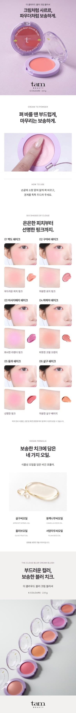
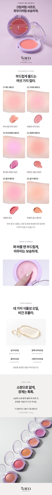

2026.10.20 · 제작·브라우저 검토 완료 / 최종 시각 승인 전
탐뷰티의 결은 유지하고,
컬러 비교와 크림투파우더 소구를 정리했어요.
유지: 라벤더 히어로·로고·서체·중앙 정렬 제목·2열 구성·화이트 여백. 히어로 출력 파일과 제품정보·전성분은 이전본과 동일합니다.
변경: 강하게 보였던 볼 사진 6장을 제외하고, 손목과 제형을 하나의 6색 비교에 모았습니다. 손목 사진은 이전 카드보다 크게 배치했습니다. 색을 덧칠하거나 채도를 낮추지 않았습니다.
USP: “크림처럼 사르르, 파우더처럼 보송하게.” 제품명·영상·짧은 제형 설명에서 같은 방향을 유지합니다. 기존 영상은 제형·도포·메이크업의 별도 장면이며 연속적인 제형 변화 실험은 아닙니다.
한 레퍼런스, 탐뷰티의 표현
프레시안 공식 에그라이크 크림 블러쉬에서 정보의 역할과 순서를 참고했습니다. 타사 이미지·문안·효능 수치는 가져오지 않았습니다.
| 1 · 히어로 | 기존 탐뷰티 제품 사진과 크림투파우더 문안 |
| 2 · 컬러 비교 | 손목 발색 + 제형, 한 번의 2열 × 3행 |
| 3 · 제형 | 펴 바를 땐 부드럽게, 마무리는 보송하게 |
| 4 · 포뮬러 | 오일 4종·비건을 보조 정보로 |
| 5 · 사용과 마무리 | 사용법 한 번 + 제품명·용량이 있는 컬렉션 사진 |
| 6 · 제품정보 | 12px 네이티브 HTML, 여섯 전성분 전체 유지 |
참고본의 반복 발색 구간은 사용자 요청에 따라 하나로 통합했습니다. 한정판·개발 스토리·효능 수치는 제외하고, 성분·비건 정보는 통합했습니다. 마지막 사용법 구간은 탐뷰티의 기존 제품 모음 사진으로 마무리합니다.
모바일 전후 비교
같은 390px의 카페24 출력본입니다. 아래 비교에서만 동일한 하단 제품정보를 생략했습니다. 실제 등록본에는 모두 포함됩니다.


검증 범위
320·390·860px에서 가로 넘침·이미지 누락·이미지 사이 틈을 확인했습니다. 발색명·톤 설명·발색 각주는 320px 기준 약 12px 이상입니다. GIF 전체 52프레임과 ZIP도 검사했습니다. 기획과 출력 화면은 비저장 방식의 클로드 검토를 거쳤으며, 최종 판단·수정은 Codex에서 진행했습니다.
손목 사진은 제공된 1차·2차가 파일 단위로 동일합니다. 상류 편집 범위와 실물 대조 여부는 확인되지 않았습니다. 이번 검토는 색 정확성 인증이나 최종 사용자 승인이 아닙니다. 카페24 실제 업로드·관리자 저장·실기기 검증은 진행하지 않았습니다.